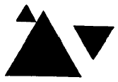
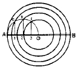
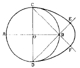
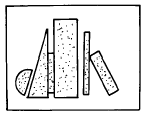

석공예기능사 (2002-07-21 기출문제)
1과목: 공예디자인
1. 공예미술이 낭만적으로 부드럽고 온화한 맛이 있으며 일본에 영향을 준 시대는?
- 낙랑시대
- 백제시대
- 조선시대
- 고려시대
(정답률: 알수없음)

2. 착시에 있어서 상방거리(上方距離)의 과대시(過大視)란?
- 같은 크기의 원을 위 아래로 겹치면 아래의 것이 크게 보인다.
- 같은 크기의 원을 위 아래로 겹치면 위의 것이 크게 보인다.
- 같은 크기의 원을 옆으로 나란히 겹치면 좌측것이 크게 보인다.
- 같은 크기의 원을 옆으로 나란히 겹치면 우측것이 크게 보인다.
(정답률: 알수없음)
3. 다음 그림에서 크게 느낄 수 있는 디자인의 원리는?

- 유사적 조화
- 상대적 조화
- 형상적 조화
- 율동적 조화
(정답률: 알수없음)
4. 다음 디자인의 요소와 원리 중 요소에 해당되는 것은?
- 통일
- 율동
- 질감
- 조화
(정답률: 알수없음)
5. 다음 중 낙랑의 공예품이 아닌 것은?
- 채화칠협
- 기마인물도상
- 누금세공
- 순금제대교구
(정답률: 알수없음)
6. 다음 감산혼합에 대한 설명 중 잘못된 것은?
- 감산혼합의 2차색은 빨강,파랑,녹색이다.
- 자주(M), 청록(C), 노랑(Y)은 색료의 3원색이다.
- 혼합할수록 검정색에 가까워진다.
- 감산혼합에서 3원색을 다 합치면 흰색이 된다.
(정답률: 알수없음)
7. 다음 배색 중 동색조의 조화는?
- 빨강 - 파랑
- 주황 - 청록
- 주황 - 귤색
- 노랑 - 보라
(정답률: 알수없음)
8. 공부방을 전체적으로 안정된 분위기를 만들기 위한 가장 적합한 색은?
- 청보라
- 노랑
- 회록색
- 자색
(정답률: 알수없음)
9. 3각자 및 3각자의 조합에 의하여 나타낼수 없는 각도는?
- 15°
- 30°
- 45°
- 50°
(정답률: 알수없음)
10. 제도의 순서에서 맨 마지막으로 기입하는 것은?
- 도면의 윤곽선
- 표제란과 부품표
- 여러가지 기호나 설명 사항
- 치수선, 치수 보조선
(정답률: 알수없음)
11. 다음 중 일점쇄선을 사용하는 것이 아닌 것은?
- 중심선
- 절단선
- 파단선
- 가상선
(정답률: 알수없음)
12. 다음 도면은 무엇을 구하기 위한 작도인가?

- 원의 면적을 동심원으로 n등분하기
- 직선 AB를 4등분하기
- 원의 면적을 접속반원으로 n등분하기
- 직선 AB를 원호를 이용하여 n등분 하기
(정답률: 알수없음)
13. 다음 표준난형(標準卵形)작도 중 원호 CE의 중심은?

- A
- B
- C
- D
(정답률: 알수없음)
14. 도법의 종류와 특성을 설명한 것 중 틀린 것은?
- 그리기 쉬운 순서는 정투상도법, 등각도법, 투시도법 순이다.
- 물체의 모양을 파악하기 쉬운 것은 등각투상도나 정투상도 보다는 투시도가 좋다.
- 기계의 구성도, 조립도에는 정투상도법이 가장 편리하다.
- 정투상도법은 입면도, 평면도, 측면도 등을 배치하는 것으로 실제의 모양이 그대로 잘 나타난다.
(정답률: 알수없음)
15. 산업혁명과 관계되는 공예는?
- 수공예
- 귀족공예
- 생산공예
- 일품공예
(정답률: 알수없음)
16. 그림과 같은 현대 석조각에서 느낄수 있는 형태는?

- 기하학적 형태
- 불규칙적 형태
- 우연적 형태
- 유기적 형태
(정답률: 알수없음)
17. 다음 중 방사균형을 취하고 있는 형상이 아닌 것은?
- 해바라기 꽃
- 태양광선
- 사람의 얼굴
- 회전을 가해 만든 조형물
(정답률: 알수없음)
18. 색의 삼속성에 대한 설명 중 바르게 된 것은?
- 사람의 눈은 색의 3속성 중 명도에 대해 가장 예민하다.
- 어떠한 색상의 순색에 무채색의 포함량이 많을 수록 채도가 높아진다.
- 어떤 색이 다른색과 구별되는 성질을 명도라 한다.
- 낮은 채도 일수록 명도는 높아 진다.
(정답률: 알수없음)
19. 파랑(B)색광과 빨강(R)색광이 혼합된 색광은?
- 노랑(Y)
- 청록(C)
- 자주(M)
- 흰색(W)
(정답률: 알수없음)
20. 먼셀의 명도단계는?
- 0 - 10
- 1 - 10
- 1 - 12
- 1 - 14
(정답률: 알수없음)
2과목: 석공예재료
21. 다음 중 주목성이 가장 강하게 느껴지는 색은?
- 차가운 색 계통
- 높은 채도의 색
- 명도가 낮은색
- 중성색 계통
(정답률: 알수없음)
22. 평행투시도의 소점은?
- 1개
- 2개
- 3개
- 4개
(정답률: 알수없음)
23. 화성암에 속하지 않는 것은?
- 사암
- 화강암
- 현무암
- 안산암
(정답률: 알수없음)
24. 화성암의 화학성분은?
- 산성암류에서 석영이 50%이상 포함된 것
- 중성암류에서 석영이 52-65% 포함된 것
- 염기성암류에서 석영이 52%이상 포함된 것
- 산성암류에서 석영이 50% 이하 포함된 것
(정답률: 알수없음)
25. 치밀하며 반점이 없는 검은 화산암이며, 석영(SiO2)을 적게 포함하여 쉽게 유동하여 굳어져서 용암표면에 특수한 유동구조를 보인다. 우리 나라에서는 제주도, 울릉도, 백두산, 한탄강에 분포하는 이 암석은?
- 현무암
- 유문암
- 섬록암
- 흑요암
(정답률: 알수없음)
26. 석재를 구조재로 사용할 때의 유의 사항은?
- 인장력을 받도록 한다.
- 압축력을 받도록 한다.
- 전단력을 받도록 한다.
- 곡력을 받게 한다.
(정답률: 알수없음)
27. 여인상을 조각하려고 한다. 소재특성에 가장 합당한 재료는?
- 사암
- 점판암
- 대리석
- 화강석
(정답률: 알수없음)
28. 다음 석재 중 가장 흡수율이 적은 것은?
- 화강암
- 석회암
- 응회암
- 사암
(정답률: 알수없음)
29. 토목용 석재로 거래되는 시장형(市場形)은?
- 평판형, 각봉형, 사각형이 있다.
- 원형, 난형 등이 있다.
- 화성암, 수성암, 변성암이 있다.
- 경석, 박리석 등이 있다.
(정답률: 알수없음)
30. 다음 중 변성암의 종류로만 되어 있는 것은?
- 사암, 셰일, 역암
- 대리암, 천매암, 규암
- 화강암, 현무암, 안산암
- 편암, 셰일, 화강암
(정답률: 알수없음)
31. 석재의 일반적인 수명은?
- 화강암 100년, 대리석 300년이다.
- 화강암 200년, 대리석 200년이다.
- 대리석 250년, 규석 300년이다.
- 화강암 300년, 규석 350년이다.
(정답률: 알수없음)
32. 연삭기에 표시되어야 할 사항이 아닌 것은?
- 연삭숫돌의 회전방향
- 제조년월일
- 소비자가격
- 정격전압
(정답률: 알수없음)
33. 정의 날끝은 강도는 크고 취성이 낮아야 한다. 취성은 무엇을 말하는가?
- 깨어지는 성질
- 단단한 성질
- 끈끈한 성질
- 펴지는 성질
(정답률: 알수없음)
34. 세그멘트(Segment)형 톱날은 어떤 암석의 석재가공에 적합한가?
- 대리석
- 화강암
- 현무암
- 엽납석
(정답률: 알수없음)
35. 석재면이 쇳물에 의한 얼룩이 생겼을 때 쇠녹을 제거하는 세척제의 올바른 혼합비율(시트로산나트륨:글리세린:물)은?
- 1 : 2 : 3
- 6 : 1 : 6
- 1 : 6 : 6
- 6 : 2 : 3
(정답률: 알수없음)
36. 화강암을 주로 구성시키는 성분은?
- 중립질
- 조립질
- 등립질
- 석영, 장석 및 운모
(정답률: 알수없음)
37. 석재에서 표면 처리를 하는 가장 큰 이유는?
- 표면의 발색
- 착색과 발색
- 구성물질의 보호
- 방수 효과
(정답률: 알수없음)
38. 다음 중 다축할석기(Gang Saw)에서 사용되는 연마재의 종류는?
- 석분
- 그릿
- 광판
- 폴리셔
(정답률: 알수없음)
39. 습식방법에 의한 석재표면의 오물제거 방법이 아닌 것은?
- 샌드블라스팅(sand blasting) 세척방법
- 수산화나트륨 용액의 세척방법
- 표백제 사용에 의한 세척방법
- 수증기에 의한 세척방법
(정답률: 알수없음)
40. 건물의 외벽에 석재를 건식공법으로 시공했을 때 줄눈공사의 역할에 대한 설명 중 틀린 것은?
- 온도, 지진 등 변형조절
- 치수오차 등 흡수
- 시공성 및 디자인 향상
- 앵글사용 용이
(정답률: 알수없음)
3과목: 석공예
41. 주위나 둘레를 장식하는 목적을 지닌 형식의 무늬는?
- 자유무늬
- 사방연속무늬
- 단독무늬
- 이방연속무늬
(정답률: 알수없음)
42. 관촉사의 미륵불(일명 은진미륵)은 어느 시대 조각 작품인가?
- 백제시대
- 신라시대
- 고려시대
- 조선시대
(정답률: 알수없음)
43. 건축석재 판재가공 순서 중 맞는 것은?
- 할석 - 규격절단 - 표면가공 - 포장
- 할석 - 표면가공 - 규격절단 - 포장
- 규격절단 - 할석 - 표면가공 - 포장
- 규격절단 - 표면가공 - 할석 - 포장
(정답률: 알수없음)
44. 대리석의 채취에 적합한 것은?
- 와이어 쏘(Wire Saw)
- 갱-쏘(Gang Saw)
- 벤드 쏘(Band Saw)
- 써큐라 브레이드 쏘(Circular Blade Saw)
(정답률: 알수없음)
45. 화약 발파법에 의한 채석을 할 때 이용하는 것은?
- 강도
- 결정도
- 절리
- 비중
(정답률: 알수없음)
46. 석재에 색연필이나 연필을 사용하는 주 목적은?
- 칫수표시
- 무게표시
- 밑그림그리기
- 색채표시
(정답률: 알수없음)
47. 메다듬질은 어떠한 때 하게되는가?
- 원석을 대강 다듬어 그대로 쓸 때
- 표면끝내기 시에
- 규격대로 쪼개낼 때
- 세밀한 형을 마감할 때
(정답률: 알수없음)
48. 원통형에서 중질석(中質石)이나 경질석(硬質石)을 가공하는데 사용되는 기계공구는?
- 드릴(drill)
- 선반(旋盤)
- 고속 재단기
- 에어 툴(air tool)
(정답률: 알수없음)
49. 다이아몬드(Diamond) 톱날 절단의 특성에 관한 설명 중 틀린 것은?
- 어떤 형태의 가공물도 쉽게 절단할 수 있다.
- 절단면이 거칠다.
- 갱쏘보다 절단속도가 빠르다.
- 원석 규격의 제한을 덜 받는다.
(정답률: 알수없음)
50. 다이아몬드 원형 톱을 사용하여 석재를 절단할 때 주의할 점과 관계가 먼 것은?
- 절입깊이
- 절삭속도
- 전압
- 냉각수
(정답률: 알수없음)
51. 핸드 그라인더의 장점은?
- 작업내용에 따라 디스크(톱날)를 바꿀 수 있다.
- 작업내용에 따라 구멍을 뚫을 수 있다.
- 거친면을 다듬는데만 이용되는 공구이다.
- 매우 편리한 자름 공구이다.
(정답률: 알수없음)
52. 다축 자동연마기에서 건축용 판재를 연마할 때 작업전 점검할 안전사항과 거리가 먼 것은?
- 연마 휠의 고정상태
- 긴급 전원차단 장치의 결함 여부
- 냉각수 공급장치의 결함 여부
- 연마 휠의 작업 단계별 사용여부
(정답률: 알수없음)
53. 피가공물에 구멍을 내기위한 보링기를 사용할 때 주의할 안전사항과 관계없는 것은?
- 피가공물의 균형상태 확인
- 보링기의 압력 확인
- 전원 차단장치 확인
- 보링팁의 마모율 확인
(정답률: 알수없음)
54. 안전의 3대 요소가 아닌 것은?
- 교육적 요소
- 기술적 요소
- 경제적 요소
- 관리적 요소
(정답률: 알수없음)
55. 퓨우즈가 끊어져 다시 끼웠는데 또 끊어졌다면, 이때 우선 조치 사항으로 올바른 것은?
- 다시 한번 끼운다.
- 기계의 합선 여부를 조사한다.
- 동선으로 잇는다.
- 좀 더 굵은 것을 끼운다.
(정답률: 알수없음)
56. 그라인더를 안전하게 사용하는 방법이 아닌 것은?
- 분진을 예방하기 위해 습한 장소에서 사용한다.
- 인화폭발을 주의한다.
- 보호안경으로 눈을 보호한다.
- 작업전에는 반드시 작업복이 안전한가를 확인한다.
(정답률: 알수없음)
57. 떨이개 사용에 관한 설명 중 올바른 것은?
- 정작업전 필요없는 부분을 석재에서 떼어내는 공구이다.
- 평면가공을 할 때 평활하게 작업하는 공구이다.
- 곡면가공을 할 때 가지런하게 고르는 공구이다.
- 석재의 결을 무시하고 작업 할 때 사용되는 공구이다.
(정답률: 알수없음)
58. 치수를 재는 자로 적당하지 않는 것은?
- 버니어 캘리퍼스
- 곧은자
- 줄자
- 수평자
(정답률: 알수없음)
59. 석재의 마름질 작업 방법 중 정다듬기 방법으로 적합한 것은?
- 거칠게 고를 때에는 정의 날이 날카롭고 가늘어야 한다.
- 곱게 고를 때에는 정의 날이 무디고 굵어야 한다.
- 거칠게 먼저 고른 후에 곱게 골라 간다.
- 곡면일 때는 낮은 곳부터 골라 나간다.
(정답률: 알수없음)
60. 석재의 오염원인이 아닌 것은?
- 수분
- 박리작용
- 생물의 번식
- 녹이나 기름
(정답률: 알수없음)